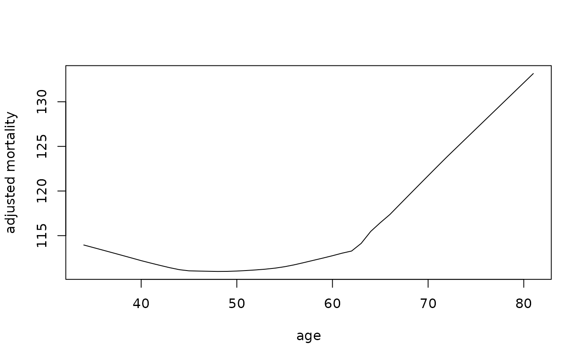
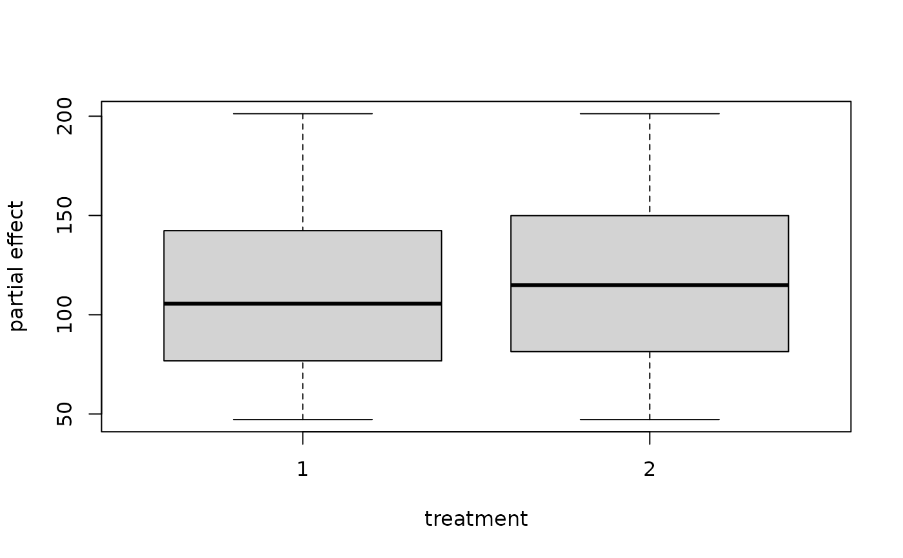
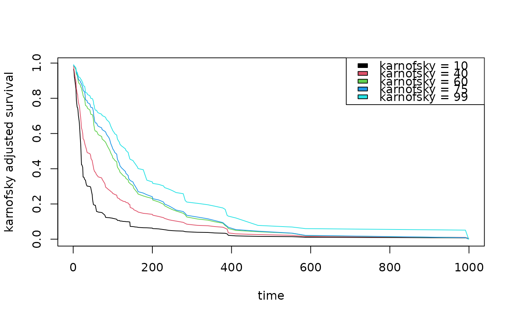
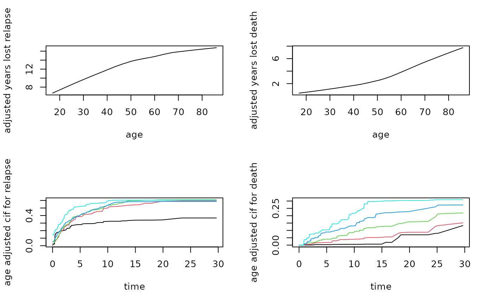

Calculate survival curve partial plot.
Arguments
- rforest
the randomForestSrc object
- var_list
a list of variables of interest. These variables should be a subset of rforest$xvar.names
- npts
the number of points to segment the xvar of interest
- partial.type
the return prediction type. For survival forests: type c("surv", "mort", "chf") For competing risk forests: type c("years.lost", "cif", "chf") see
randomForestSRC::partial.rfsrcor more information
Examples
## ------------------------------------------------------------
## survival
## ------------------------------------------------------------
data(veteran, package = "randomForestSRC")
v.obj <- randomForestSRC::rfsrc(Surv(time,status)~.,
veteran, nsplit = 10, ntree = 100)
spart <- surv_partial.rfsrc(v.obj, var_list="age", partial.type = "mort")
#> partial plot for: age
## partial effect of age on mortality
partial.obj <- partial(v.obj,
partial.type = "mort",
partial.xvar = "age",
partial.values = v.obj$xvar$age,
partial.time = v.obj$time.interest)
pdta <- get.partial.plot.data(partial.obj)
plot(lowess(pdta$x, pdta$yhat, f = 1/3),
type = "l", xlab = "age", ylab = "adjusted mortality")

## example where x is discrete - partial effect of age on mortality
## we use the granule=TRUE option
partial.obj <- partial(v.obj,
partial.type = "mort",
partial.xvar = "trt",
partial.values = v.obj$xvar$trt,
partial.time = v.obj$time.interest)
pdta <- get.partial.plot.data(partial.obj, granule = TRUE)
boxplot(pdta$yhat ~ pdta$x, xlab = "treatment", ylab = "partial effect")

## partial effects of karnofsky score on survival
karno <- quantile(v.obj$xvar$karno)
partial.obj <- partial(v.obj,
partial.type = "surv",
partial.xvar = "karno",
partial.values = karno,
partial.time = v.obj$time.interest)
pdta <- get.partial.plot.data(partial.obj)
matplot(pdta$partial.time, t(pdta$yhat), type = "l", lty = 1,
xlab = "time", ylab = "karnofsky adjusted survival")
legend("topright", legend = paste0("karnofsky = ", karno), fill = 1:5)

## ------------------------------------------------------------
## competing risk
## ------------------------------------------------------------
data(follic, package = "randomForestSRC")
follic.obj <- rfsrc(Surv(time, status) ~ ., follic, nsplit = 3, ntree = 100)
## partial effect of age on years lost
partial.obj <- partial(follic.obj,
partial.type = "years.lost",
partial.xvar = "age",
partial.values = follic.obj$xvar$age,
partial.time = follic.obj$time.interest)
pdta1 <- get.partial.plot.data(partial.obj, target = 1)
pdta2 <- get.partial.plot.data(partial.obj, target = 2)
par(mfrow=c(2,2))
plot(lowess(pdta1$x, pdta1$yhat),
type = "l", xlab = "age", ylab = "adjusted years lost relapse")
plot(lowess(pdta2$x, pdta2$yhat),
type = "l", xlab = "age", ylab = "adjusted years lost death")
## partial effect of age on cif
partial.obj <- partial(follic.obj,
partial.type = "cif",
partial.xvar = "age",
partial.values = quantile(follic.obj$xvar$age),
partial.time = follic.obj$time.interest)
pdta1 <- get.partial.plot.data(partial.obj, target = 1)
pdta2 <- get.partial.plot.data(partial.obj, target = 2)
matplot(pdta1$partial.time, t(pdta1$yhat), type = "l", lty = 1,
xlab = "time", ylab = "age adjusted cif for relapse")
matplot(pdta2$partial.time, t(pdta2$yhat), type = "l", lty = 1,
xlab = "time", ylab = "age adjusted cif for death")
